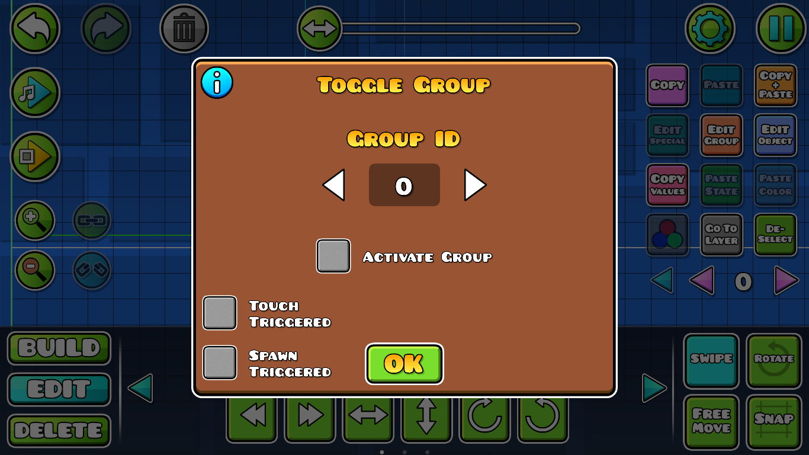
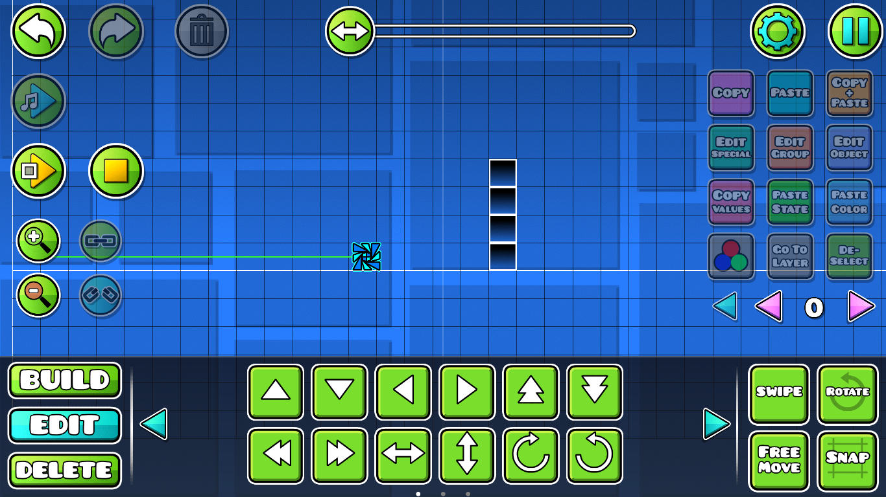

Toggle: Este trigger activa o desactiva objetos u otros Triggers, es decir, ya sea eliminándolos o apareciendolos de nuevo si es que estaban eliminados anteriormente por otro trigger Toggle.

Por ejemplo: Esta columna de bloques obstruye el paso del jugador y es imposible de saltar, por lo tanto el icono muere.
Nota: Pase el mouse por encima para ver la muerte del jugador por el obstáculo.

En cambio con el trigger toggle, puede "eliminar" esta estructura en el transcurso del nivel.
Pero activando la casilla "Activate Group" dentro de la interfaz de el Trigger Toggle, puede aplicar el efecto contrario, el cual es volver a aparecer la misma estructura después de que otro Trigger Toggle la haya desaparecido, que de hecho, al desaparecer no solo no es visible, sino que directamente no afecta al gameplay por lo tanto no tiene hitbox.
Este trigger antiguamente era usado para hacer "low detail" dentro de los niveles, pero actualmente es más usado para hacer caminos o monedas secretas dentro del nivel.
Tutorial recomendado: